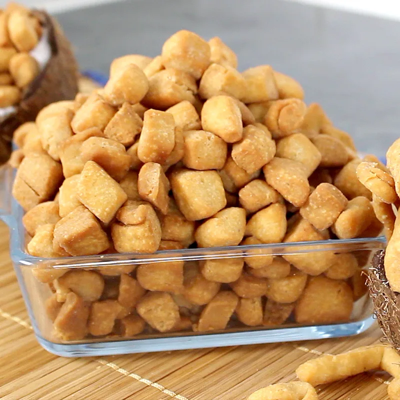

Chin-Chin

DESCRIPTION
Chin Chin is a crunchy, sweet Nigerian snack made from fried dough.
INGREDIENTS
- 4 cups of flour
- 1/2 cups of sugar
- 1 teaspoon of baking powder
- 1/2 teaspoon of nutmeg
- 1/4 teaspoon of salt
- 1/2 cup of butter
- 2 eggs
- 1/2 cup of milk
- Oil for frying
STEPS
- Mix flour, sugar, baking powder, nutmeg and salt in a bowl.
- Rub in the butter until mixture looks crumbly.
- Add eggs and milk, mixing to form a dough.
- Roll dough on a floured surface and cut into small squares or strips.
- Heat oil in a deep pan and fry until golden brown.
- Drain on paper towels and allow to cool before serving.
go back to homepage